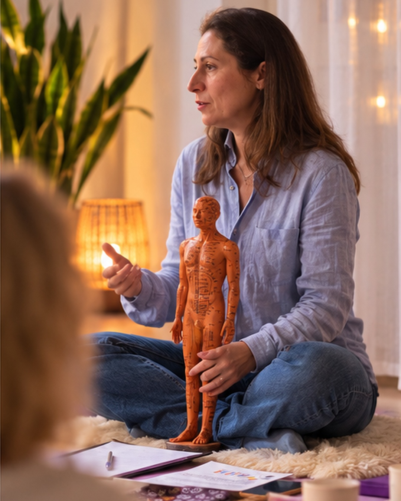

Schiena, collo e muscoli
- Mal di schiena e sensazione di rigidità.
- Collo e cervicale indolenziti, spalle sempre tese.
- Tensioni muscolari dopo giornate alla scrivania o attività fisica.
- Rigidità muscolare e movimenti poco fluidi.
Il benessere nasce dall’ascolto. Attraverso i trattamenti di medicina cinese, Shiatsu, Yoga e pratiche dedicate al corpo e al respiro, ti accompagno in un percorso di maggiore benessere.

Le pratiche proposte sono complementari e non sostituiscono il parere del medico, la diagnosi o le cure.
Se ti riconosci in una delle situazioni qui sotto, puoi rivolgerti a me: partiamo da ciò che ti dà fastidio e decidiamo insieme come procedere.
Ogni persona ha una storia diversa: ti spiego il mio approccio e valutiamo insieme se un percorso complementare di benessere è adatto alle tue esigenze.
Raccontami di cosa hai bisogno ↗Ogni persona ha esigenze e ritmi diversi. Esplora le pratiche proposte e scegli da dove iniziare.
Durante il trattamento lavoro con le mani. Uso manovre di massaggio e pressioni mirate lungo i percorsi che la medicina cinese chiama meridiani, adattando il lavoro alle tue esigenze. Se utile, posso affiancare al lavoro manuale tecniche complementari come la coppettazione o la moxibustione.
Lo Shiatsu è un trattamento manuale di origine giapponese che utilizza pressioni portate con dita, palmi e altre tecniche manuali lungo i meridiani energetici e su punti specifici del corpo. Favorisce il libero fluire dell’energia vitale, aiuta a sciogliere tensioni fisiche ed emotive e sostiene il naturale equilibrio dell’organismo. Il trattamento promuove rilassamento, benessere e la capacità di autoregolazione e autoguarigione del corpo.
Il Kundalini Yoga è una pratica che unisce movimento, respirazione, meditazione, rilassamento e l’utilizzo del suono attraverso i mantra. Attraverso sequenze di esercizi (kriya), tecniche di respirazione e momenti di consapevolezza, aiuta a riequilibrare corpo, mente ed energia, favorendo una maggiore vitalità, presenza e benessere. La pratica sostiene la naturale capacità di autoregolazione dell’organismo, contribuendo a ridurre stress e tensioni e a migliorare l’equilibrio psicofisico.
Puoi scegliere tra corsi di gruppo e lezioni individuali.
In lezioni esclusivamente individuali, ti guido attraverso semplici tecniche di respirazione. Impari a riconoscere come respiri e a trovare un ritmo più fluido e disteso, che puoi usare anche nella vita quotidiana per rallentare, ritrovare calma e allentare le tensioni.
Chiedi informazioni ↗Per anni ho convissuto con un mal di schiena. L’incontro con un medico che affiancava pratiche complementari alla medicina convenzionale mi ha fatto scoprire possibilità diverse. Il miglioramento che ho percepito mi ha spinta a ripensare le mie abitudini e a scoprire approcci al benessere che fino ad allora conoscevo poco.
In quella ricerca ho incontrato il Kundalini Yoga e ho scelto di formarmi come insegnante. Durante un ritiro ho scoperto la medicina cinese e ho deciso di studiarla. Negli anni ho approfondito anche lo Shiatsu e il Sotai Ho attraverso corsi ed esperienze di studio in contesti diversi, anche a Tokyo.
Oggi porto nei trattamenti e nelle lezioni ciò che ho imparato in questi anni di studio e di lavoro con le persone. Ogni incontro comincia da quello che mi racconti e da come ti senti. Da lì scegliamo insieme come lavorare.
Parliamone ↗Ogni incontro nasce da una relazione. Ti accolgo con il tempo e l’attenzione che la tua storia merita.
Iniziamo con un momento di ascolto: la consulenza orientativa, per conoscerti e comprendere le tue esigenze.
Ti propongo un percorso personalizzato, rispettoso del tuo ritmo. Ogni persona è unica, ogni incontro è diverso.
Iniziamo il percorso con i trattamenti o gli esercizi che abbiamo scelto insieme, al tuo ritmo.
Scegli il percorso e la sede che preferisci: Monticello o Missaglia. Concorderemo insieme il giorno e l’orario del tuo incontro.
Puoi preparare qui la tua richiesta e copiarla per inviarmela via email. Nessun dato viene inviato automaticamente o salvato dal sito.
Preferisci scrivermi direttamente? ↗Puoi preparare la richiesta con il modulo, copiarla e inviarmela via email, oppure contattarmi al telefono. Ti risponderò per concordare disponibilità e dettagli: la richiesta non conferma l’appuntamento.
Sì. Puoi scrivere per ricevere indicazioni sulle pratiche offerte e sulle modalità disponibili.
Il modulo prepara il testo della richiesta solo nel tuo browser: il sito non lo invia né lo archivia. Puoi copiarlo e scegliere di inviarlo con la tua posta elettronica. Non sono utilizzati strumenti di analisi, cookie di profilazione o risorse di terze parti incorporate.
Per chiarimenti sul trattamento dei dati nelle comunicazioni puoi scrivermi a cerchiodellasalute@gmail.com.